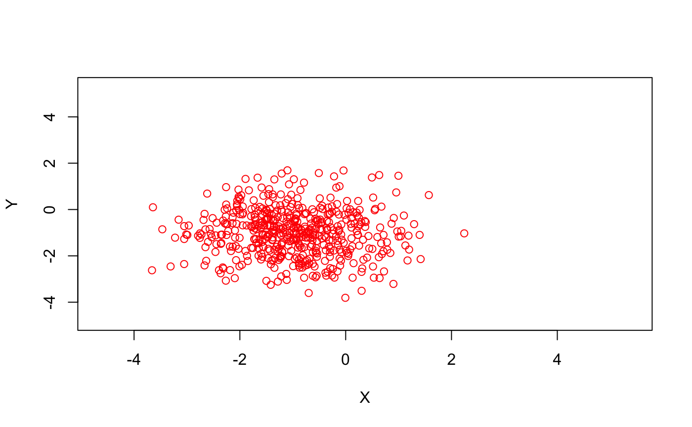
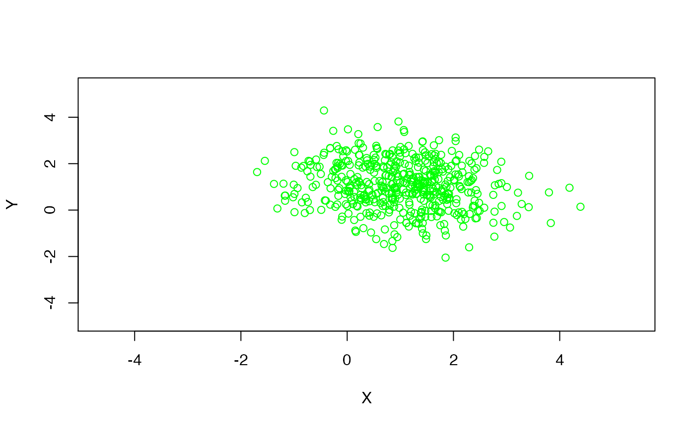
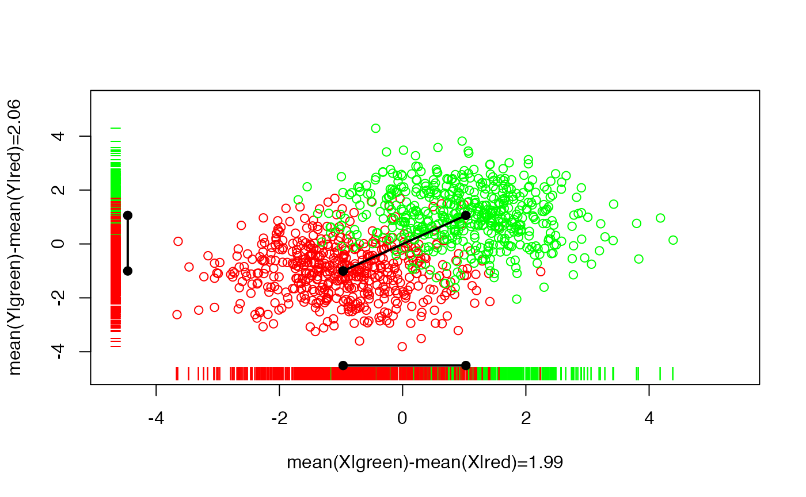
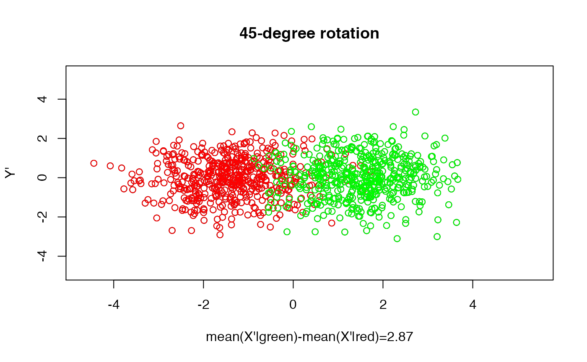

vignettes/docs/featureRedundancy.Rmd
featureRedundancy.RmdThis is the document associated to the slide showing the usefulness of having redundant (i.e., correlated) features, when the correlation is solely induced by the class membership.
set.seed(123)
N <- 500
## generate observations from the "red feature""
X0 <- rnorm(N,-1,1)
Y0 <- rnorm(N,-1,1)
## generate observations from the "green feature
X1 <- rnorm(N,1,1)
Y1 <- rnorm(N,1,1)
xlim <- c(min(X0,X1)-1,max(X0,X1)+1)
ylim <- c(min(Y0,Y1)-1,max(Y0,Y1)+1)
pch <- 1 # style of point to be plot
## plot the red feature
plot(X0, Y0, xlim=xlim, ylim=ylim, pch=pch, col="red",
xlab="X",
ylab="Y")
## plot the green feature
plot(X1, Y1, xlim=xlim, ylim=ylim, pch=pch, col="green",
xlab="X",
ylab="Y")
## plot green and red feature together (and the points coordinates in each dimension)
pch <- 1
plot(X0, Y0, xlim=xlim, ylim=ylim, pch=pch, col="red",
xlab=paste("mean(X|green)-mean(X|red)=",round(mean(X1)-mean(X0),2),sep=""),
ylab=paste("mean(Y|green)-mean(Y|red)=",round(mean(Y1)-mean(Y0),2),sep=""))
points( X1, Y1, pch=pch, col="green")
points( X1, rep(ylim[1],N), pch="|", col="green")
points( X0, rep(ylim[1],N), pch="|", col="red")
points( c(mean(X0),mean(X1)), rep(ylim[1]+.3,2), pch=19, col="black" )
lines( c(mean(X0),mean(X1)), rep(ylim[1]+.3,2), col="black", lwd=2 )
points( rep(xlim[1],N), Y1, pch="_", col="green" )
points( rep(xlim[1],N), Y0, pch="_", col="red" )
points( rep(xlim[1],2)+.2, c(mean(Y0),mean(Y1)), pch=19, col="black" )
lines( rep(xlim[1],2)+.2, c(mean(Y0),mean(Y1)), col="black", lwd=2 )
points(mean(X0),mean(Y0),col="black")
points(mean(X0),mean(Y0),col="black",pch=19)
points(mean(X1),mean(Y1),col="black",pch=19)
lines(c(mean(X0),mean(X1)),c(mean(Y0),mean(Y1)),lwd=2)
## simple function to rotate the axes
rotate <- function(theta) matrix( c(cos(theta),-sin(theta),sin(theta),cos(theta)), 2, 2)
dat <- rbind(cbind(X0,Y0),cbind(X1,Y1))
datR <- dat %*% rotate(-pi/4)
dst <- abs(mean(datR[1:N,1])-mean(datR[(N+1):(2*N),1]))
plot(datR[,1],datR[,2],pch=pch,
xlab=paste("mean(X'|green)-mean(X'|red)=",round(dst,2),sep=""),
ylab="Y'",xlim=xlim,ylim=ylim,main="45-degree rotation")
points(datR[1:N,1],datR[1:N,2],col="red",pch=pch)
points(datR[(N+1):(2*N),1],datR[(N+1):(2*N),2],col="green",pch=pch)